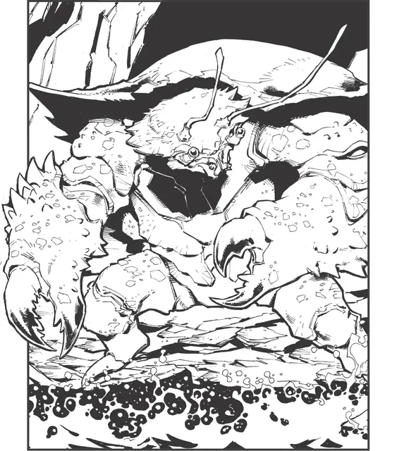

Краболюд
Crab Folk
Большой Великан, нейтральный

Класс Доспеха 16 (природный доспех)
Хиты 68 (8к10 + 24)
Скорость 40 футов, плавая 40 футов
| мод | спас | ||
|---|---|---|---|
| СИЛ | 19 | +4 | +4 |
| ЛОВ | 10 | +0 | +0 |
| ТЕЛ | 17 | +3 | +3 |
| мод | спас | ||
|---|---|---|---|
| ИНТ | 7 | −2 | −2 |
| МДР | 9 | −1 | −1 |
| ХАР | 9 | −1 | −1 |
Чувства тёмное зрение 30 футов, пассивное Восприятие 9
Языки Общий, Великаний
Опасность 3 (700 опыта)
Бонус мастерства +2
Особенности
Частичная амфибия. Краболюд может дышать воздухом и под водой, но должен погружаться в воду каждые 24 часа, чтобы избежать удушения.
Действия
Мультиатака. Краболюд совершает две атаки Клешнёй.
Клешня. Рукопашная атака оружием: +6 к попаданию, дистанция 10 фт., одна цель. Попадание: 7 (1к6+4) дробящего урона, и цель становится схваченной (сложность спасброска 14). Пока захват не окончится, краболюд может наносить автоматические попадания по цели свой клешнёй, и теряет возможность совершать атаки этой клешнёй против других целей. Краболюд имеет две клешни, каждой из которых он может схватить только одну цель за раз.
Описание
Краболюды – результат магического ритуала, совершённого давным-давно могущественной зелёной каргой с целью превратить служащих ей огров во что-то более полезное. Все краболюды живущие сейчас происходят от тех её созданий, с большинством из них проживающим в малых, изолированных группах. Хотя они удовлетворены мирной жизнью охотников и собирателей, породившая их магия иногда сподвигает их броситься в устрашающие рейды, когда условия тому благоволят.
Водные вассалы. Давным-давно, зелёная карга собрала маленькую армию огров для служения ей в качестве своих силовиков вдоль пустынного побережья, которое она объявила своим. Карга считала простой ум и сокрушительную силу полезными, но слишком часто, их нехватка хитрости рушила её планы. Многие свалились в море и утонули, слишком тугоумные и нетерпеливые чтобы научиться плавать. Другие ломали караваны и сокрушали их защитников крайне эффективно, но брали только дешёвые, объёмные товары, оставляя ценные, меньшие сокровища нетронутыми.
Разочарованная своими слугами, карга сотворила заклинание адаптировавшее огров под прибрежные земли, одновременно с тем закрепляя в их умах несколько простых команд, чтобы помочь с отведенными им задачами. Она дала им упорство и крепость крабов чтобы укрепить их силу, хватающие клешни чтобы помочь им собирать любимые ей сокровища, и глубоко внедрённую магическую склонность к послушанию.
Жаждущие сокровищ. Карга особенно любила серебро, и ненавидела сам шанс позволить даже малейшим крупицам этого металла ускользнуть от неё. Её заклинание дало краболюдам неутолимую любовь к серебру. Видя его, все краболюды чувствуют неудержимое желание забрать его, и отнести в своё логово. Если потребуется, они прибегают к насилию для его получения.
Безжалостные рейдеры. Каждый год, когда теплое лето уступает место осенней прохладе, краболюды всматриваются в небо в поиске предзнаменований. В древние времена, зелёная карга внимательно наблюдала за рыбацкими деревнями и городками близ своих владений. Если эти поселения становились слишком сильны, она посылала своего фамильяра, жестокую чайку, чтобы собрать краболюдов своими криками на войну. В наши дни, волей несчастного случая, чайка может приземлиться у логова краболюдов и издать верный набор криков, чтобы пробудить в них эту древнюю тягу. Сподвигнутые к действию, краболюды свирепствуют по побережью, грабя и руша любые поселения, о которых они знают или наталкиваются. Спустя ровно шесть дней, их буйство подходит к концу, и они возвращаются к своим мирным жизням.
Глубоко засевшие воспоминания. Когда прибрежный рейд или грабеж серебра завершаются, краболюды собирают вместе свои добытые сокровища, и помещают их к подножью простого чучела своей карги-создательницы, сделанного из коряг и прочего мусора, и хранимого в их общинном логове. Краболюды едва ли понимают что движет ими, но они понимают, что чучело представляет образ их матери и создательницы, которой они должны подчиняться.
Легенда гласит, что зелёная карга предпочитала путешествовать в образе благородной королевы хобгоблинов. Если краболюды когда-либо встретят кого-либо с сильным сходством с этой формой, то магия может принудить их поклоняться этому существу, подчиняясь каждому его приказу.